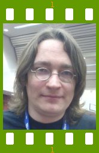

People of openSUSE: Martin Lasarsch

Martin Lasarsch, the well-known openSUSE evangelist, gave us the great opportunity to let us know a little bit more about himself. You can’t miss this ‘People of openSUSE’ interview!
- Nicknames: localhorst when I’m at home, notlocalhorst at work
- Homepage: http://hitme.resetbutton.de http://en.opensuse.org/User:Mlasars
- Blog: Nah, I’m not a blogger … you can find some openSUSE related stuff from me on Novell coolblogs and news.opensuse.org (both aggregated on planetsuse).
- Favorite season: I don’t like summer, the other seasons are ok.
- Motto: no birds – no applause (Mars Attacks). Well not a motto, but thats what I had for a long time in my signature.
Please introduce yourself!
Born in the summer of 69 in Oldenburg, northern Germany. What I’m doing now was not planed, I learned mechanic for all kinds of coolingmachines. It was a very nice and versatile job, but after 10 years I had enough. Started working for SUSE in 2000 as Supporter, Admin for 5 years, sales(!) and now I’m in Henne’s Core Services team.
Tell us about the background to your computer use.
In the 5th grade I saw a book about the 68000 CPU at a friends house. It was highlevel and I didn’t understand a word, but this was propably my first contact with real computer stuff (I don’t count the pong games :-) ). In 83 I was everyday in a local TV shop because they had the brand new Commodore C64 and VIC20. 84 I finally got a C64 and since then I use Computers every day :-) Several Amiga systems followed and in 2000 I bought my first PC. Using the Amiga helped my a lot when I started at SUSE, I had also a bash, I wrote already scripts, a lot of Open Source software was available for Amiga OS. Anyone remembers Fish Disks? :-)
When and why did you start using openSUSE/SUSE Linux?
The first SUSE version was 5.1, I installed it on a friends system. Before that I also tried Linux on my Amiga, but only for a short time. I started using SUSE on a daily basis in 2000 when I started working as a Supporter, iirc it was 6.3 at this time.
When did you join the openSUSE community and what made you do that?
I’m in the openSUSE team since the beginning. I liked the idea to create something new which is more open than the distribution was before. And if you look now at the project you can see this was the right thing to do.
In what way do you participate in the openSUSE project?
I work for SUSE, I do many different things for the project: work on the wiki (new software, plugins, languages, servers), still have 2 packages (pin and siga), and I’m the guy you will usually see on exhibitions. I’m also responsible to talk about the openSUSE project/distribution with the journalists.
What especially motivates you to participate in the openSUSE project?
Something new, fast growing, with influence from the community and not a closed in house developed distribution. Look at 10.3 for example, you can see that the community helped a lot to make this a kicking distribution. It also really motivates when you see the wiki dieing because so many people try to download the new version. The 10.3 release day was awesome.
What do you think was your most important contribution to the openSUSE project/community or what is the contribution that you’re most proud of?
My webpin page was cool, but it’s obsolete now because of benjimans site which is much better/faster. I was really proud when my first real bash script got into the distribution (i guess it was 7.0), in the default installation! That was siga, a tool I wrote to make the installation support easier. It’s still in the distribution but it will be superseeded soon with something new …. For later openSUSE days the SDB conversion was a hell of a job. And I’m happy that FOSDEM and Linuxtag this year went quite smooth in the end, I had to organize everything.
When do you usually spend time on the openSUSE project?
During work, in the evenings I’m always trying new things on openSUSE.
Three words to describe openSUSE? Or make up a proper slogan!
I really like the old one: have a lot of fun …
What do you think is missing or underrated in the distribution or the project?
We have a lot of people using the openSUSE build service, I would like to see that this would be the first place when you need a binary package for the distribution you use, not only openSUSE. What’s missing right now is a better marketing and I mean marketing in a good way :-) . It would be nice if we could support the community better, for example on events. Make your own openSUSE meeting/conference in your country like ENOS with support from Novell/SUSE. But we are working on it.
What do you think the future holds for the openSUSE project?
There are so many things going on, build service, user directory, trust system and of course world domination :-) For sure more influence from the community.
A person asks you why he/she should choose openSUSE instead of other distribution/OS. What would be your arguments to convince him/her to pick up openSUSE?
It’s easy to install and configure, good hardware support, the best laptop support, on the openSUSE build server where you can find a lot of packages, and a friendly community. Sometimes there are only small things needed to convince somebody, sometimes flashy features like compiz :-)
Which members of the openSUSE community have you met in person?
Because I’m at many exhibitions: so many, I will for sure forget somebody. I was also at the first smeet (meeting of IRC users from the #suse channel), before openSUSE started.
How many icons are currently on your desktop?
12, but I don’t use them that often. When I do presentations I move the slides to the desktop for fast access. I usually use the KDE quick-launcher in the kicker with 7 icons right now (kontact, home, konqueror, konsole, kate, kopete and firefox)
What is the application you can’t live without? And why?
kontact, because I work a lot with email.
Which application or feature should be invented as soon as possible?
Timemachine from Apple sounds cool, it would be nice I we could have something similar. Imagine that everytime you configure something a snapshot would be made, configured it wrong, just go back. A compressed filesystem for general use would be also nice.
Which is your preferred text editor? And why?
I write most text in a mail first (for archiving) so the thing from kontact/kmail. On console or to change config files I use vi because it’s usually installed everywhere. For longer scripts I use kate or gvim.
Which famous person would you want to join the openSUSE community?
Ok, hardest question … I don’t know. For sure somebody who can really contribute to the project and not just famous because of something he/she did in the past.
Which computer related skills would you like to have?
Hardware design, than I would make a ultra fast flashdisk. All components are available and are cheap, but you can’t buy a fast flashdisk for a decent price. With fast I mean over 200MB/s :-)
The Internet crashes for a whole week. How would you feel, what would you do?
Bad. I would read some books, I have so many to finish. I have also some plans to build something, this would be a good opportunity to start.
Which is your favorite movie scene?
hmmm … that’s hard, there are so many. I like scenes when suddenly everthing clears up, when you see the whole story different. Like in Sixth Sense when he realize that he is dead.
Star Trek or Star Wars?
Star Trek, I never liked Star Wars, even as a child.
What is your favorite food and drink?
I’m a meat guy, even I was vegetarian for 5 years. Beef, Sushi, Fastfood. Non alcoholic drink: water. Alcoholic: Beer (hey I’m German and live in Nuremberg where we have the highest brewery density in the world), and for cocktail I like white russian.
Favorite game or console (in your childhood and nowadays)?
NDS is cool, I love the games. Wii rocks but I’m not sure if everything will work with the remote. At the moment I’m playing Donkey Kong Country, which is one of my all time favorites (with the original Mario games). I will never ever play Civilization again because I played it way to much. I usually don’t play that much anymore, when it comes to Linux games I like Frozen Bubble and Supertux. Commercial games: I played a lot the UT games and waiting for the new UT 2007 (hopefully again with native Linux support) and the darwinia demo was quite nice.
Which city would you like to visit?
Because I travel a lot it’s hard to say. Usually I’m not really interested in the city where I’m at the moment, I don’t do sightseeing or walk around much. I need a good hotel, decent food and an internet connection. I was 2 months ago in San Francisco (LWE) which was nice but to cold.
What is your preferred way to spend your vacation?
Don’t take care when/if you have to sleep, with a huge supply of food and cigarettes. I don’t travel to make vacation.
Someone gives you $1.000.000. What would you do with the money?
Probably I would by a House in a suburb or in the middle of nowhere. But only if I can work in a Homeoffice and I have broadband internet.
If traveling through time was possible, when would we be most likely to meet you?
I guess in the Future, space traveling. It would be also interesting to see how some historical events really happened, like JFK, the moonlanding and other conspiracy stuff
There’s a thunderstorm outside. Do you turn off your computer?
Usually no. All my systems are protected, only if it’s really heavy I will turn off everthing. Yes, I remember the times where a lightning killed the whole gear of some friends.
Have your ever missed an appointment because you forgot about it while sitting at your computer?
oops, I have to go now :-) Not really, but sometimes I forget appointments, no matter what I’m doing.
Show us a picture of something, you have always wanted to share!
Because I’m single and not participated in the baby boom we had recently, no cute baby pictures from me.
You couldn’t live without…
computer, internet, books
Which question was the hardest to answer?
the “famous person” question.
What other question would you like to answer? And what would you answer?
Q: How much time do you needed for this interview? A: Way to to much … :-)